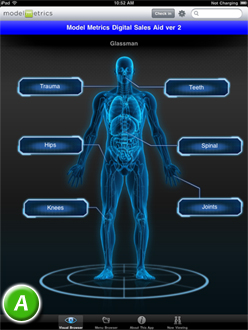
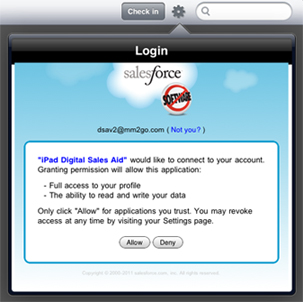
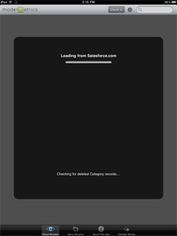

Document Version: 1.0, Last Update: 15 July 2011
Welcome to the Salesforce Services Digital Sales Aid! This guide provides an overview of the application and how to best leverage it to display content in the field.
This guide contains the following sections:
Overview
Features
Requirements
Support
Starting Digital Sales Aid the First Time
Navigating the Home Screen
-Checking In and Checking Out
-Settings
-Search
-Bottom Navigation Buttons (Visual Browser, Menu Browser, About this App, Now Viewing)
Viewing Product Pages
-Viewing Related Content
-Sending Attachments to Contacts
Frequently Asked Questions
The Salesforce Services Digital Sales Aid is a visual front-end to Salesforce.com content. Digital Sales Aid takes your salesforce.com content and places it in a highly visual, colorful, and easy-to-navigate mobile format for the Apple iPad tablet. Sales staff equipped with iPads can now present the most up-to-date information on their products—such as PDF files, Word documents, PowerPoint presentations, high-resolution photos, and even videos—directly to customers when they’re out in the field. Digital Sales Aid can also forward content to prospects via e-mail and allows the user to provide feedback on content shown, including tracking metrics (integrated with Salesforce.com's CRM capabilities.
Note: For demonstration purposes, the screenshots in this guide show DSA customized for a fictional life sciences organization which sells medical equipment.
The application consists of two basic navigation screens:

(A) The Home Screen, which contains the high-level product categories. (Sub-categories can also be created).
(B) Product Pages for the products in each category. In addition to descriptions, detail screens contain links to relevant media such as documents and video demonstrations. Different products can be selected by tapping on them in the Product Gallery.
For more information, see the About This App at the bottom center of the screen.
The Digital Sales Aid application offers the following features:
1. The most relevant product information placed directly into the fingertips of sales representatives and clients in an attractive package.
2. Easly configuration via a standard "wizard" tool, with support for custom logos, art, images, and branding.
3. Full support of Adobe PDF, Word, PowerPoint, and video.
4. All content is downloaded to device upon the first user login or whenever the Synchronize button is pushed--no Internet connection is required. (Synchronizing is covered in this guide.)
5. Documents can be sent as attachments via e-mail, and field reps can rate their usefulness.
6. Sales representative activity tracking, including:
The following is required to install and use Digital Sales Aid:
1. Any iPad (1, 2, or future models). Both wifi-only and 3G models are supported.
2. Salesforce.com (SFDC) with:
<to be done>
After you have downloaded the application and installed it through the App Store, launch the program by tapping the icon. The first time the program loads, an automated setup process occurs which transfers all your Salesforce information to your device.
1. You will be prompted to log in using your standard Salesforce login credentials. The login process works the same as it does on the Salesforce Web site. Enter your user name and password. It is recommended that you check Remember User Name before touching Login. If you've forgotten your password, you can click the Forgot your password? link to have the site send you a verification code. Note: the application logs you in automatically when the program is launched.
2. After successfully logging in, you will receive a confirmation request to access your information and copy it to your device:

Click Allow to continue.
3. A screen will appear indicating that Salesforce is transferring data to your device.

You will see several of these screens as the information (contacts, attachments, and other content) is transferred to your iPad. Please be patient while the process completes. These are rough estimates on how long the initial download process can take:
| Data Size | Download Time |
|---|---|
| up to 20 MB | |
| 30 MB | |
| 40 MB | |
| 50 MB | |
| 60 MB | |
| 75+ MB |
When the information has been transferred, you will be taken to the Home Screen.